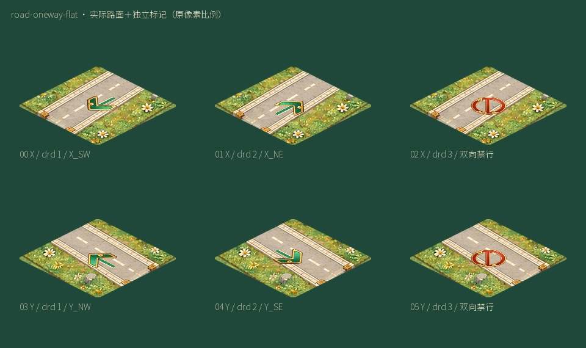
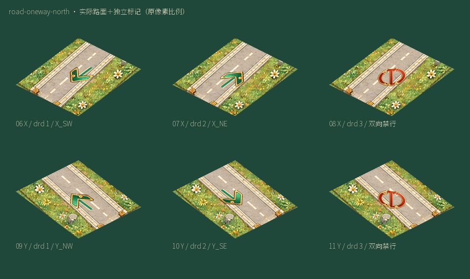
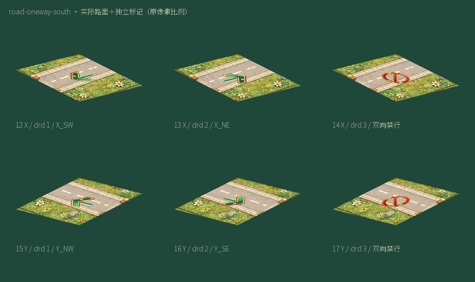
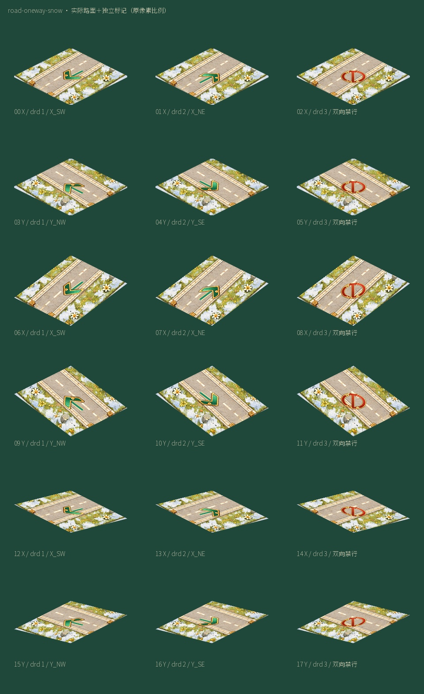
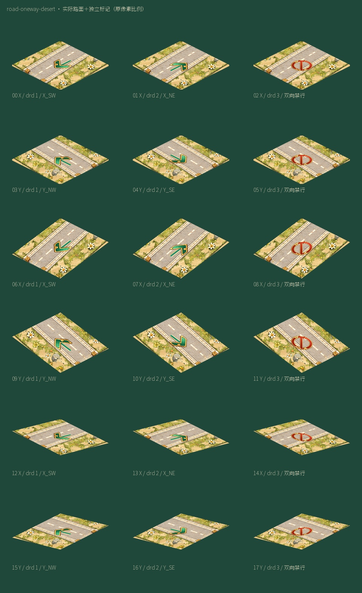

道路单行／双向禁行地面标记
18个源码Sprite槽；独立地面叠层，采用当前原生玉绿金边箭头及朱砂禁行图素。19种原始坡形×两轴×3限制状态共114个地基转换绑定。下面为实际PNG路面拼装，不含Unity业务运行。
源状态绑定 · 定位与语义
road-oneway-flat

road-oneway-north

road-oneway-south

road-oneway-snow

road-oneway-desert
